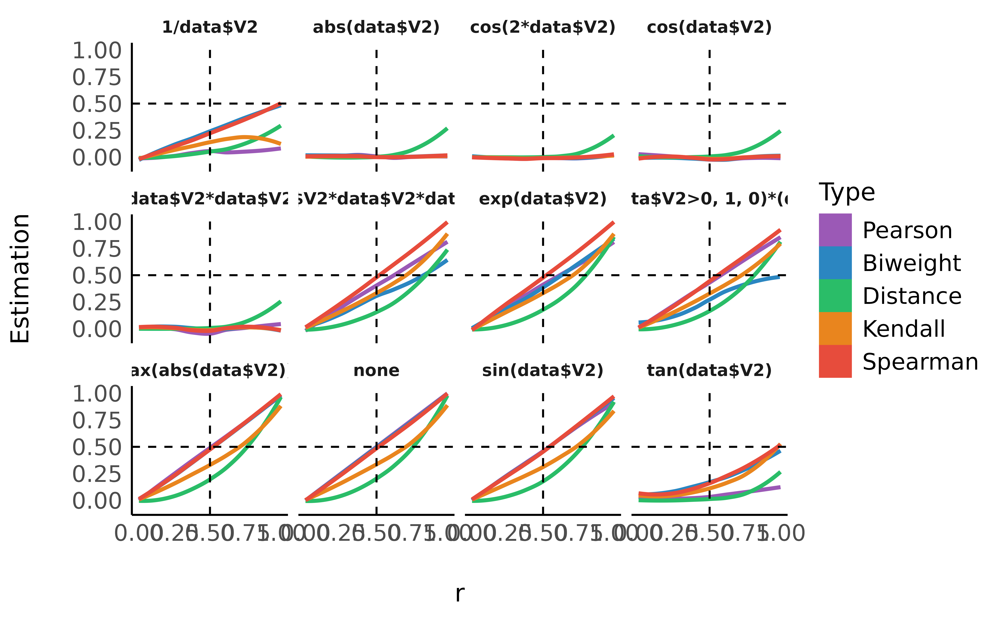

Correlations tests are arguably one of the most commonly used statistical procedures, and are used as a basis in many applications such as exploratory data analysis, structural modelling, data engineering etc. In this context, we present correlation, a toolbox for the R language (R Core Team 2019) and part of the easystats collection, focused on correlation analysis. Its goal is to be lightweight, easy to use, and allows for the computation of many different kinds of correlations, such as:
\[r_{xy} = \frac{cov(x,y)}{SD_x \times SD_y}\]
\[r_{s_{xy}} = \frac{cov(rank_x, rank_y)}{SD(rank_x) \times SD(rank_y)}\]
\[\tau_{xy} = \frac{2}{n(n-1)}\sum_{i<j}^{}sign(x_i - x_j) \times sign(y_i - y_j)\]
Biweight midcorrelation: A measure of similarity that is median-based, instead of the traditional mean-based, thus being less sensitive to outliers. It can be used as a robust alternative to other similarity metrics, such as Pearson correlation (Langfelder and Horvath 2012).
Distance correlation: Distance correlation measures both linear and non-linear association between two random variables or random vectors. This is in contrast to Pearson’s correlation, which can only detect linear association between two random variables.
Percentage bend correlation: Introduced by Wilcox (1994), it is based on a down-weight of a specified percentage of marginal observations deviating from the median (by default, 20 percent).
Shepherd’s Pi correlation: Equivalent to a Spearman’s rank correlation after outliers removal (by means of bootstrapped Mahalanobis distance).
Blomqvist’s coefficient: The Blomqvist’s coefficient (also referred to as Blomqvist’s Beta or medial correlation; Blomqvist, 1950) is a median-based non-parametric correlation that has some advantages over measures such as Spearman’s or Kendall’s estimates (see Shmid and Schimdt, 2006).
Hoeffding’s D: The Hoeffding’s D statistic is a non-parametric rank based measure of association that detects more general departures from independence (Hoeffding 1948), including non-linear associations. Hoeffding’s D varies between -0.5 and 1 (if there are no tied ranks, otherwise it can have lower values), with larger values indicating a stronger relationship between the variables.
Gamma correlation: The Goodman-Kruskal gamma statistic is similar to Kendall’s Tau coefficient. It is relatively robust to outliers and deals well with data that have many ties.
Gaussian rank correlation: The Gaussian rank correlation estimator is a simple and well-performing alternative for robust rank correlations (Boudt et al., 2012). It is based on the Gaussian quantiles of the ranks.
Point-Biserial and biserial correlation: Correlation coefficient used when one variable is continuous and the other is dichotomous (binary). Point-Biserial is equivalent to a Pearson’s correlation, while Biserial should be used when the binary variable is assumed to have an underlying continuity. For example, anxiety level can be measured on a continuous scale, but can be classified dichotomously as high/low.
Winsorized correlation: Correlation of variables that have been formerly Winsorized, i.e., transformed by limiting extreme values to reduce the effect of possibly spurious outliers.
Polychoric correlation: Correlation between two theorised normally distributed continuous latent variables, from two observed ordinal variables.
Tetrachoric correlation: Special case of the polychoric correlation applicable when both observed variables are dichotomous.
Partial correlation: Correlation between two variables after adjusting for the (linear) the effect of one or more variables. The correlation test is here run after having partialized the dataset, independently from it. In other words, it considers partialization as an independent step generating a different dataset, rather than belonging to the same model. This is why some discrepancies are to be expected for the t- and the p-values (but not the correlation coefficient) compared to other implementations such as ppcor. Let \(e_{x.z}\) be the residuals from the linear prediction of \(x\) by \(z\) (note that this can be expanded to a multivariate \(z\)):
\[r_{xy.z} = r_{e_{x.z},e_{y.z}}\]
library(correlation)
library(bayestestR)
library(see)
library(ggplot2)
library(tidyr)
library(dplyr)We will fit different types of correlations of generated data with different link strengths and link types.
generate_results <- function(r, n = 100, transformation = "none") {
data <- bayestestR::simulate_correlation(round(n), r = r)
if (transformation != "none") {
var <- ifelse(grepl("(", transformation, fixed = TRUE), "data$V2)", "data$V2")
transformation <- paste0(transformation, var)
data$V2 <- eval(parse(text = transformation))
}
out <- data.frame(n = n, transformation = transformation, r = r)
out$Pearson <- cor_test(data, "V1", "V2", method = "pearson")$r
out$Spearman <- cor_test(data, "V1", "V2", method = "spearman")$rho
out$Kendall <- cor_test(data, "V1", "V2", method = "kendall")$tau
out$Biweight <- cor_test(data, "V1", "V2", method = "biweight")$r
out$Distance <- cor_test(data, "V1", "V2", method = "distance")$r
out$Distance <- cor_test(data, "V1", "V2", method = "distance")$r
out
}
data <- data.frame()
for (r in seq(0, 0.999, length.out = 200)) {
for (n in c(100)) {
for (transformation in c("none", "exp(", "log10(1+max(abs(data$V2))+", "1/", "tan(", "sin(", "cos(", "cos(2*", "abs(", "data$V2*", "data$V2*data$V2*", "ifelse(data$V2>0, 1, 0)*(")) {
data <- rbind(data, generate_results(r, n, transformation = transformation))
}
}
}
data %>%
tidyr::pivot_longer(-c(n, r, transformation), names_to = "Type", values_to = "Estimation") %>%
dplyr::mutate(Type = forcats::fct_relevel(Type, "Pearson", "Spearman", "Kendall", "Biweight", "Distance")) %>%
ggplot(aes(x = r, y = Estimation, fill = Type)) +
geom_smooth(aes(color = Type), method = "loess", alpha = 0) +
geom_vline(aes(xintercept = 0.5), linetype = "dashed") +
geom_hline(aes(yintercept = 0.5), linetype = "dashed") +
guides(colour = guide_legend(override.aes = list(alpha = 1))) +
see::theme_modern() +
scale_color_flat_d(palette = "rainbow") +
scale_fill_flat_d(palette = "rainbow") +
guides(colour = guide_legend(override.aes = list(alpha = 1))) +
facet_wrap(~transformation)
model <- data %>%
tidyr::pivot_longer(-c(n, r, transformation), names_to = "Type", values_to = "Estimation") %>%
lm(r ~ Type / Estimation, data = .) %>%
parameters::parameters()
dplyr::arrange(model[6:10, ], desc(Coefficient))> Parameter | Coefficient | SE | 95% CI | t(11903) | p
> ------------------------------------------------------------------------------------
> Type [Distance] * Estimation | 0.90 | 0.02 | [0.86, 0.95] | 40.14 | < .001
> Type [Kendall] * Estimation | 0.66 | 0.02 | [0.62, 0.70] | 32.07 | < .001
> Type [Biweight] * Estimation | 0.53 | 0.02 | [0.50, 0.57] | 29.24 | < .001
> Type [Spearman] * Estimation | 0.51 | 0.02 | [0.48, 0.54] | 31.70 | < .001
> Type [Pearson] * Estimation | 0.44 | 0.02 | [0.41, 0.47] | 26.49 | < .001As we can see, distance correlation is able to capture the strength even for severly non-linear relationships.
Bishara, Anthony J, and James B Hittner. 2017. “Confidence Intervals for Correlations When Data Are Not Normal.” Behavior Research Methods 49 (1): 294–309. https://doi.org/10.3758/s13428-016-0702-8.
Fieller, Edgar C, Herman O Hartley, and Egon S Pearson. 1957. “Tests for Rank Correlation Coefficients. I.” Biometrika 44 (3/4): 470–81. https://doi.org/10.1093/biomet/48.1-2.29.
Langfelder, Peter, and Steve Horvath. 2012. “Fast R Functions for Robust Correlations and Hierarchical Clustering.” Journal of Statistical Software 46 (11). https://www.jstatsoft.org/v46/i11/.
R Core Team. 2019. R: A Language and Environment for Statistical Computing. Vienna, Austria: R Foundation for Statistical Computing. https://www.R-project.org/.